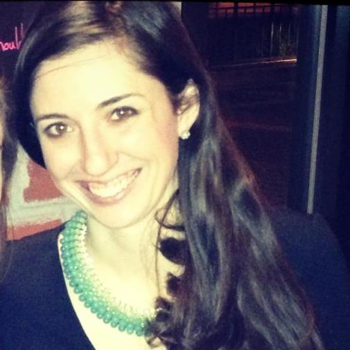

Katherine (Katie) Perri
“My platform is focused on three key areas. The first is ‘one team,’ I really believe that students, administrators, and faculty are all on one team, the University of Chicago, and I really want to build that partnership. The second is data-driven. We really need to gain greater access to data in order to make stronger decisions around investment and prioritization. The third is diversity and inclusion, so really wanting to develop open dialogue among various stakeholders across graduate programs and undergraduate programs, as well as with faculty, administrators, and trustees in order to really facilitate that level of trust we need to have in order to make key decisions with the University.”
Trauma Center
“I look at it from two different perspectives. Personally, I would obviously love there to be greater resources available, and I think that it’s a key issue within our community. I think in order to build stronger relationships with the local community, that’s something that’s very much necessary. I think from an administrative perspective, I would say we have to be able to utilize our resources in the sense that we are not harming the services we already have. So if we are overextending ourselves in some capacity, then we would not be doing justice to the services we already have and could potentially hurt the programs we already have in place. I think that it’s really thinking about setting up a adult trauma center comes down to strategic planning, and I think the UCMC has taken a lot great initiatives of building out a strategic planning team. They are all former BCG consultants from the health care practice, and I think that’s something that they’re working towards, but it’s not going to be an overnight solution.”
Divestment from Fossil Fuels
“I would personally love to see that happen right away, I think the University, from an administrative perspective, is highly levered—it’s one of the most highly levered private universities in the country, I really don’t think it’s that easy to make investment switches quickly. I think that there are a lot of resources, at Booth particularly, around impact investing. Booth is considered to be a leader in impact investing, and I think it would be great to see that more closely aligned with some of the strategic decisions of how the endowment is currently funded. I think that’s an area that I would like to see not only students take a greater leadership in, but also faculty particularly who have a lot of expertise to be a greater voice, and that’s where it comes back to building better relationships across faculty and students. Students alone can’t do it, but faculty have a different level of influence we need to better be able to utilize.”
University's Handling of Sexual Assault
“I think that the University is making improvements, which are obviously necessary. I think the first step is doing the climate survey, and it’s wonderful to see that change coming out. I think this is another area where the data-driven approach is necessary to be able to take the data from the climate survey, and utilize that information to see a much clearer picture of what this University is doing, both against its own history but as well as it’s peer institutions. And then be able to utilize what are developing best practices for education…it’s not enough to just follow the bare minimum listed from the department of education, but again, it comes back to you have to have a very clear picture of what the issues are right now in the process in order to make those improvements, and you need the data to do that.”
University's Handling of Bias Incidents and Racial Discrimination
“Again, I’m really excited to see that there’s another climate survey coming out around this, and I think that would provide a lot of feedback that is needed in order to develop ways to make this a more inclusive environment, and I think that it’s not just about overt racism, I think indirect racism and microaggressions are key issues that need to be addressed as well. I think that those issues, those experiences, can greatly vary depending on what part of the University you are a part of, and I think one key strategy is to see areas of the school that have significantly stronger results from the survey, and what is it about those particular communities that makes them feel more inclusive, and how do we build that across other areas of the University. It goes back to the data-driven approach.”